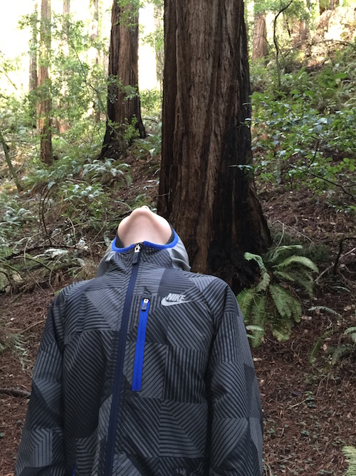

This was our big nature day. We went to see the Muir Woods, over the Golden Gate Bridge which is where you can find 100s of year old coastal Redwood trees that you can't see anywhere else in the world except for the coast of Northern California and Southern Oregon. The trees were very old and super-tall and thick. We learned that Redwoods are also very unique. The have very short roots but very wide trunks. The park has a platform to walk on so no on steps on the tree roots. Some people mistake the Redwoods for giant Sequoias - however Sequoias only live in the Mountains. These are the tallest trees in the world.
Next we went to a beach near Muir Woods and then to a warm pub to end the day. Our parents went to dinner at Chez Panisse, a well-known restaurant in Berkeley and we stayed in. Ari had a sleepover at our hotel next and Arden slept at Minna's, we had fun!
Muir Woods website